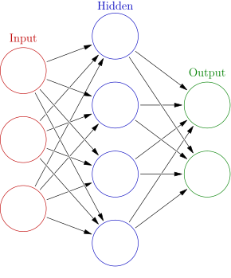
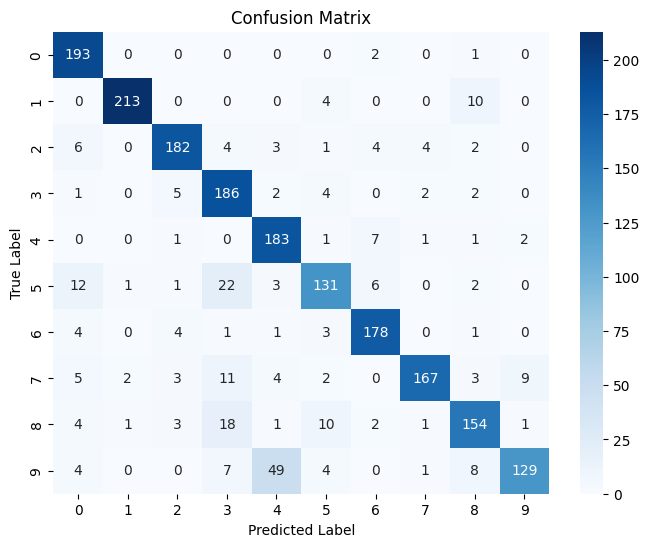

Posted on December 13, 2025
This is the first article in what I hope will be a series of articles that delve deeper into the fascinating and highly relevant topic of neural network architectures. The motivation behind covering this topic is that neural network architectures are the foundational architectures behind most AI applications, and since they are highly prevalent, I thought it would be helpful and interesting to understand how they work.
The goal of this article is to provide the reader with all of the necessary information to understand how a regular neural network works and to create their own neural network. First, we cover the essential theory of neural networks, and then we discuss how I made a neural network from scratch so that the reader can get an idea of how neural networks can be implemented. This article assumes that the reader is somewhat familiar with some basic linear algebra, such as linear combinations and Hadamard products, and some basic calculus, such as derivatives and the chain rule.
The architecture of a regular neural network is based on the structure of the human brain, and it consists of neurons that model the neurons in the brain. The neurons are connected to each other via edges, which model synapses in the brain. The neurons in a neural network are arranged in layers. Typically, in a regular neural network, each neuron in one layer is connected to every other neuron in the next layer via an edge. Because of this, we call regular neural networks fully-connected networks. The image below from Wikipedia shows what this architecture looks like.
The neurons of a neural network perform a similar function as the neurons in the brain; they receive signals from the edges of the neural network and send signals or "fire" based on the signals that they received. The edges can be thought of as the input signals to a neuron. They pass the outputs from the previous layer to the next layer. Each edge also has an associated weight. These weights are what we want to train our neural networks to optimize or learn the best values for producing correct predictions.
The neurons of a neural network perform two operations. First, we calculate the weighted sum, which is a linear combination that involves multiplying each input signal by its associated weight and then summing them all up. This is a simple way to combine all of the inputs into a single scalar value, which we can then use for the second operation, which is getting an output from the neuron's activation function. The weight represents how strongly each input matters. The weighted sum is calculated as follows: $$z = \sum_{i = 1}^{n}{w_ix_i} + b_j$$, where $z$ is the weighted sum, where $w_i$ is the weight from the $i_{th}$ edge to the neuron, $x_i$ is the $i_{th}$ output from the previous layer to the neuron, and $b_j$ is the bias of the $j_{th}$ neuron in the current layer.
Once we have the weighted sum, we pass it as input into an activation function. The activation function determines the output of a neuron, and helps to introduce non-linearity into the network so that it can learn more complex patterns and approximate any continuous function (Universal Approximation Theorem). There are many different kinds of activation functions depending on the task. Neural networks are capable of doing both regression (predicting a numerical output) and classification (predicting which class a data point belongs to) tasks. for regression some of the most common activation functions include the $sigmoid(z) = \frac{1}{(1 + e^z)}$, $tanh(z) = \frac{e^z - e^{-z}}{e^z + e^{-z}}$, and $relu(z) = max(0, z)$, for classification some common activation functions include sigmoid for binary classification and $softmax(\vec{z}) = \frac{e^{z_{i}}}{\sum_{j=1}^k{e^{z_j}}}$, where $\vec{z}$ is the vector of outputs from the previous layer, for multi-class and binary classification.
Each neuron in a layer performs this weighted sum calculation and passes the weighted sum to the activation function associated with the neuron. Every activation is then used as input to each neuron in the next layer of the neural network. This process is continued until we reach the output layer of the neural network. At this layer, the neural network outputs either a number for regression or a value that is associated with some class for classification.
These feedforward calculations are the process by which the neural network produces outputs for prediction. However, we need the neural network to find the optimal weight values for making accurate predictions. We do this by training the neural network on examples where we provide some input and the correct output, so the model can adjust its weights to produce similar answers given similar inputs.
To train neural networks to find the optimal weights, we use an algorithm called backpropagation. The algorithm is called backpropagation because it involves carrying the error signal back through the neural network, $\frac{\partial C}{\partial z_{i}^{l}}$. Backpropagation calculates the gradients (rate of change or slope at a specific point) of the cost function with respect to each weight of the neural network, $\frac{\partial C}{\partial w_{i}^{l}}$, using the error signal. The gradients, $\frac{\partial C}{\partial w_{i}^{l}}$, indicate the direction in which we want to decrease the error, the magnitude of the steepest error, and how much we want to alter the value of the weight $w_{i}^{l}$. The backpropagation algorithm involves the following steps:
Steps 3, 4, and 5 deserve a little more explanation since we have not discussed these steps yet. Starting at step 3, after the neural network produces its output, we need to calculate the error, $\frac{\partial C}{\partial z_{j}^{L}}$. We define $\frac{\partial C}{\partial z_{L}^{j}}$ as the error because there is a heuristic sense in which $\frac{\partial C}{\partial z_{L}^{j}}$ is a measure of the error in the neuron. For example, by making a small change in the weighted input $\Delta z_j$, we change the output of the neuron, $\sigma(z_j + \Delta z_j)$. This change is propagated through the network's layers as the neuron's output is used as input to the neurons in the next layer, etc., finally causing the overall cost function $C$ to change by $\frac{\partial C}{\partial z_{j}^{l}} \Delta z$. It is important to remember that $\frac{\partial C}{\partial z_{j}^{l}}$ is the rate of change of the cost function $C$ with respect to the weighted input $z_j$, and therefore multiplying this rate by the amount of change in the weighted sum $\Delta z_j$ we get how much the how much the cost function changed when the weighted sum $z_j$ changed. We want to choose $\Delta z_j$ to have the opposite sign of $\frac{\partial C}{\partial z_{j}^{l}}$ as this will lower the cost function.
To get $\delta^l = \frac{\partial C}{\partial z_j^l}$ we use the chain rule. This is because $C$ is a composite function that depends on $z_j^l$ through $\sigma(z_j^l)$, $z_j^l \rightarrow a_j^l = \sigma(z_j^l) \rightarrow C(a_j^l)$. $$\frac{\partial C}{\partial z_j^l} = \frac{\partial C}{\partial a_j^l} \frac{\partial a_j^l}{\partial z_j^l}$$, where $\frac{\partial C}{\partial a_j^l}$ measures how much the cost function is changing as a function of the $j_{th}$ activation and $\frac{\partial a_j^l}{\partial z_j^l}$ is a measure of how much the activation function $\sigma$ changes with respect to $z_j^l$. The reason we multiply the derivatives $\frac{\partial C}{\partial a_j^l}$ and $\frac{\partial a_j^l}{\partial z_j^l}$ together is that these rates stack to get the conversion rate for the cost as a function of the weighted input. If you change $z_j^l$ by $\Delta z_j$, then the activation output will change by $\Delta a_j^l = \frac{\partial a_j^l}{\partial z_j^l} \Delta z_j^l$. Then the cost function will change by $\Delta C = \frac{\partial C}{\partial a_j^l} \Delta a_j^l = \frac{\partial C}{\partial a_j^l} \frac{\partial a_j^l}{\partial z_j^l} \Delta z_j^l$. This demonstrates why the chain rule is necessary for stacking the conversion rates, $\frac{\partial C}{\partial a_j^l}$ and $\frac{\partial a_j^l}{\partial z_j^l}$ to get $\frac{\partial C}{\partial z_j^l}$.
After we have calculated the error at the last layer, we move to step 4 and backpropagate the error from the final layer to the previous layers. For this, it is helpful to write the error for $\delta^l$ in terms of the subsequent layer $l+1$. We can do so in the following way: We currently have the equation for the error in the form $\delta^L = \frac{\partial C}{\partial z_{L}^{j}} = \frac{\partial C}{\partial a_{j}^{L}} \odot \sigma^{'}(z^L)$. We can rewrite $\frac{\partial C}{\partial a_j^l}$ as $\frac{\partial C}{\partial a_j^l} = \frac{\partial C}{\partial z_j^{l+1}} \frac{\partial z_j^{l+1}}{\partial a_j^l}$ this works because the activations $a^{l}$ are the same as the inputs to the next layer $z^{l+1}$. We also know that $\delta^{l+1} = \frac{\partial C}{\partial z^{l+1}}$ and that the derivative of $z^{l+1} = W^{l+1}a^{l+1} + b^{l+1}$ with respect to the activations is $\frac{\partial z^{l+1}}{\partial a^{l+1}} = W^{l+1}$. Therefore, $\delta^l = \frac{\partial C}{\partial a_{j}^{l}} \odot \sigma^{'}(z_j^l)$ is equivalent to $\delta^l = ((w_j^{l+1})^T\delta_j^{l+1}) \odot \sigma'(z_j^l)$. This moves the error $\delta^{l+1}$ backward through the activation function in layer $l$, giving us the error in $\delta^l$ in the weighted sum input to $l$.
Once we have the error $\delta^l$ for each layer, we can easily do step 5, which is calculating the gradient of the cost function with respect to the weights of the network, $\frac{\partial C}{\partial W}$. To calculate $\frac{\partial C}{\partial w_j^l}$ we must use the chain rule: $\frac{\partial C}{\partial w_j^l} = \frac{\partial C}{\partial a_j^l} \frac{\partial a_j^l}{z_j^l} \frac{\partial z_j^l}{\partial w_j^l}$. However, in we have already calculated $\delta^l = \frac{\partial C}{\partial z^l} = \frac{\partial C}{\partial a^l} \frac{\partial a^l}{z^l}$ for every layer. Therefore, the only other quantity that we need to calculate $\frac{\partial C}{\partial w^l}$ for all layers $l$ is $\frac{\partial z^l}{\partial w^l}$, which is simply the inputs to the layer $x^l$ or $a^{l-1}$ since $z^l = w^lx^l+b^l$.
After we have successfully backpropagated the error and calculated $\frac{\partial C}{\partial W}$ for all weights, we are now able to update the weights using gradient descent, which we use to find the minimum of a function by moving in the opposite direction of the function's gradient. The formula for gradient descent is: $$w_{new} = w_{old} - \alpha \frac{\partial C}{\partial w_{old}}$$, where $w_{old}$ is the value of the weight before it is updated, $\alpha$ is the learning rate, and $\frac{\partial C}{\partial w_{old}}$ is the gradient of the cost function with respect to the weight value before it is updated. We want to go in the opposite direction of the gradient (slope), which tells us how much the cost increases when the weight increases, so we make it negative. We also multiply the gradient by a term called the learning rate $\alpha$, which helps to control the size of the update step so the weight does not change too drastically and potentially overshoot the minimum of the cost function.
Now I will cover how I coded a fully connected neural network from scratch using Python libraries, such as Numpy, for the main data structures of the network and array/matrix operations, and Math, for some calculations. After creating the neural network, I trained and tested it on the MNIST dataset, which is a dataset of handwritten digits, to ensure that it was implemented correctly.
To implement the fully connected neural network, I decided to follow an object-oriented approach. First, I created the Layer class. The class requires three arguments to be instantiated: the number of neurons in the layer, the number of input features that will be passed to each neuron in the layer, and the activation function that will be used for all neurons in the layer. It should seem fairly obvious why the number of neurons and the activation function are necessary, but we also need the number of input features to determine the size of the weight matrix, since the size of the weight matrix is (size of the input vector * number of neurons).
The layer class has five data structures, which are all from the Numpy library: the input
feature array, the weight matrix, the biases array, the weighted sum array, and the
activations array. The input vector (input_vector), weighted sum vector (z_vector), and
activation vector (a_vector) are all initialized as empty Numpy arrays, meaning they
contain garbage values. This is okay since each position in these arrays will be overwritten
with actually useful values. The bias vector is initialized with all zeros, and its values
will be updated during backpropagation. Finally, the weight matrix is initialized using
Xavier Initialization. Xavier initialization is done using the formula:
$W = \text{Normal}(-\sqrt{\frac{6}{n_{in}+n_{out}}}, \sqrt{\frac{6}{n_{in}+n_{out}}})$,
where $n_{in}$ is the number of input neurons, and $n_{out}$ is the number of output
neuorns. It sets the initial weights of a neural network so that the variance of the
activations (and gradients) stays roughly the same from layer to layer. This helps
prevent the two major problems of vanishing and exploding gradients during training.
The most important methods of the class include: input() (sets the values of the
input_vector), get_weighted_sums() (returns the z_vector), set_weights() (sets
the values of weight_matrix), biases() (returns the bias vector of the layer),
set_biases() (sets the bias vector of the layer), activation_func() (returns the
type of activation function that the layer uses), weighted_sum() (calculates the
weighted sum z for each neuron in the layer), outputs() (returns the outputs of each
neuron in the layer), and activation() (calculates the output 'a' of each neuron in the
layer). The set_weights(), biases(), set_biases(), activation(), set_weights(), and
outputs() methods are all necessary for implementing backpropagation. The weighted_sum()
method is used for the feedforward calculation. I also implemented some activation
functions, such as step_func(), sigmoid_func(), tanh_func(), relu_func(), and
softmax_func().
The second class I implemented is called Fully_Connected_NN. This class has one data
structure, a list containing the layer objects that are passed to it. The four main methods
of the Fully_Connected_NN class are train(), test(), feedforward_calc(), and
backpropagation_calc(). We will briefly discuss how each of these methods works and show
some of the code for them.
The train() method requires four arguments: x_train, y_train, error_metric, learning_rate, and epochs. It then runs two nested loops that implement the logic of stochastic gradient descent. The outer loop iterates for the specified number of epochs. Inside this loop, another loop iterates through all of the datapoints in x_train and y_train. Within the inner loop, we first ensure that x_train and y_train, which contain the input features and their corresponding labels, are both converted to NumPy arrays so that they can be used by the layers of the neural network. Then we do the feedforward calculations using feedforward_calc() and the backpropagation calculations using backpropagation_calc() for each datapoint. This means that the weights of the network are updated after each feedforward calculation.
def train(self, x_train, y_train, error_metric, learning_rate, epochs):
for i in range(epochs):
# Get all of the outputs for the ith iteration
for j in range(len(x_train)):
x = x_train.iloc[j].to_numpy() # convert Series → NumPy array
y = int(y_train.iloc[j]) # convert pandas scalar → python int
output = self.feedforward_calc(x)
self.backpropagation_calc(learning_rate, error_metric, output, y)
The test() method evaluates the performance of the neural network. It requires the arguments x_test, y_test, and error_metric. In this method, we perform the feedforward calculation to get the label predictions of the neural network for all datapoints in x_test.
def test(self, x_test, y_test, error_metric):
# Get the NNs predictions
num_outputs = self.layers[-1].layer_size()
outputs = np.zeros((len(x_test), num_outputs))
for i in range(len(x_test)):
x = x_test.iloc[i].to_numpy() # ensure NumPy array
outputs[i] = self.feedforward_calc(x)
Then we compute the error or accuracy of the predictions compared to the labels, based on the error metric passed to the test() method.
y_test.to_numpy()
if error_metric == 'accuracy':
pred_classes = np.argmax(outputs, axis=1)
accuracy = np.mean(pred_classes == y_test)
return accuracy
elif error_metric == "MSE":
error = np.mean((outputs - y_test) ** 2)
elif error_metric == "MAE":
error = np.mean(np.abs(outputs - y_test))
elif error_metric == "cross-entropy":
error = -np.sum(y_test * np.log(outputs + 1e-12))
else:
raise ValueError("Invalid error_metric. Must be either 'MSE' or 'MAE'.")
return error
The feedforward_calc() method takes the input to the first layer of the network, computes the weighted sum of the inputs for each neuron, applies the activation function, and then passes the activations to the next layer. It continues this process through the final layer and returns the output.
def feedforward_calc(self, input_features_vector):
activations_vector = input_features_vector
for layer in self.layers:
layer.input(activations_vector)
weighted_sums = layer.weighted_sum()
activations_vector = layer.activation(weighted_sums)
return activations_vector
The backpropagation_calc() method requires learning_rate, error_metric, nn_output, and target_output. The learning_rate determines how quickly weights change during gradient descent, which follows backpropagation. The error metric is necessary because the derivative of the error, ∂C/∂aL, is used to compute the final layer error:
\(\delta^L = \frac{\partial C}{\partial a^L} \sigma'(z^L)\).
Below is the code for backpropagation and gradient descent.
# 1. Compute the error vector for the last layer L = dC/da * act_func'(z^L)
dC_da = loss_derivative(nn_output, target_output, error_metric)
L = self.layers[-1]
L_act_func = L.activation_func()
if L_act_func == "softmax":
err_L = nn_output - target_output
else:
if L_act_func == "sigmoid":
da_dz = nn_output * (1 - nn_output)
elif L_act_func == "step":
da_dz = 0
elif L_act_func == "tanh":
da_dz = 1 - nn_output**2
elif L_act_func == "relu":
da_dz = (L.z_vector > 0).astype(float)
else:
return f"Invalid activation function for layer ${i}."
err_L = dC_da * da_dz
# 2. Backpropagate the error
err = [None] * len(self.layers)
err[-1] = err_L
err_next_l = err_L
for i in range(len(self.layers) - 2, -1, -1):
layer_i = self.layers[i]
act_func = layer_i.activation_func()
next_l = self.layers[i + 1]
next_l_weight_matrix = next_l.weights().T
a = layer_i.outputs()
if act_func == "sigmoid":
da_dz = a * (1 - a)
elif act_func == "step":
da_dz = 0
elif act_func == "tanh":
da_dz = 1 - a**2
elif act_func == "relu":
da_dz = (layer_i.z_vector > 0).astype(float)
else:
return f"Invalid activation function for layer ${i}."
err_l = (next_l_weight_matrix @ err_next_l) * da_dz
err[i] = err_l
err_next_l = err_l
# 3. Compute gradient and update weights
for i in range(1, len(self.layers)):
previous_l = self.layers[i - 1]
current_l = self.layers[i]
a = previous_l.output_features()
dC_dW_i = np.outer(err[i], a)
dC_db_i = err[i]
new_weights = current_l.weights() - learning_rate * dC_dW_i
current_l.set_weights(new_weights)
new_biases = current_l.biases() - learning_rate * dC_db_i
current_l.set_biases(new_biases)
There are a few things specific to the task of classifying the handwritten digits in the MNIST dataset that I will briefly cover as well. First, MNIST pixel values, like many image datasets, are between 0 (black) and 255 (white), with all other values being shades of gray. Neural networks learn much more effectively when input values are in a small, consistent range — typically 0 to 1. So, we simply divide all of the inputs by 255.0 to ensure that all inputs are in the range of 0 to 1, X = X / 255.0. Second, each image in the network is 28x28 pixels, which, when flattened into a vector, is a vector with a length of 784. Therefore, the first layer of the neural network had to have 784 neurons so that all input features are passed into the network. Third, since the neural network for MNIST classification uses softmax, I converted the labels to one-hot encoded vectors of length 10, since there are ten labels, 0 through 9.
def to_one_hot(label, num_classes=10):
v = np.zeros(num_classes)
v[label] = 1.0
return v
This one-hot representation allows the neural network to compare its predicted probability distribution to the true class using loss functions like cross-entropy, which require the target to be expressed as a vector rather than a single integer. For example, the to\_one\_hot() function creates a vector like [0, 0, 0, 1, 0, 0, 0, 0, 0, 0] or 3, and the network outputs something like [0.01, 0.04, 0.15, 0.60, 0.10, 0.05, 0.02, 0.01, 0.01, 0.01], and whichever position in the output vector has the largest value is the number that the network predicts as being the most likely handwritten digit.
The following tables display the results of my neural network on the MNIST dataset. The main metrics that I used to determine the effectiveness of the network on the test set were accuracy and cross-entropy. The hyperparameters that I tuned were the number of epochs and the learning rate.
| Epochs | Learning Rate | Accuracy | Recall | Precision | F1 | Support |
|---|---|---|---|---|---|---|
| 5 | 0.1 | 0.66 | 0.65 | 0.70 | 0.61 | 2000 |
| 10 | 0.1 | 0.83 | 0.82 | 0.84 | 0.82 | 2000 |
| 15 | 0.1 | 0.88 | 0.88 | 0.88 | 0.88 | 2000 |
| 20 | 0.1 | 0.87 | 0.86 | 0.87 | 0.86 | 2000 |
| 25 | 0.1 | 0.88 | 0.88 | 0.88 | 0.88 | 2000 |
| 30 | 0.1 | 0.85 | 0.86 | 0.87 | 0.85 | 2000 |
| 35 | 0.1 | 0.88 | 0.88 | 0.89 | 0.88 | 2000 |
| 40 | 0.1 | 0.89 | 0.89 | 0.90 | 0.89 | 2000 |
| 45 | 0.1 | 0.88 | 0.88 | 0.89 | 0.88 | 2000 |
| 50 | 0.1 | 0.90 | 0.90 | 0.90 | 0.90 | 2000 |
| 55 | 0.1 | 0.87 | 0.87 | 0.87 | 0.87 | 2000 |
| 60 | 0.1 | 0.86 | 0.87 | 0.87 | 0.86 | 2000 |
| 65 | 0.1 | 0.93 | 0.93 | 0.93 | 0.93 | 2000 |
| 70 | 0.1 | 0.90 | 0.90 | 0.90 | 0.90 | 2000 |
| Epochs | Learning Rate | Accuracy | Recall | Precision | F1 | Support |
|---|---|---|---|---|---|---|
| 5 | 0.01 | 0.68 | 0.68 | 0.73 | 0.65 | 2000 |
| 10 | 0.01 | 0.81 | 0.80 | 0.82 | 0.80 | 2000 |
| 15 | 0.01 | 0.85 | 0.85 | 0.86 | 0.85 | 2000 |
| 20 | 0.01 | 0.88 | 0.87 | 0.88 | 0.87 | 2000 |
| 25 | 0.01 | 0.89 | 0.88 | 0.89 | 0.88 | 2000 |
| 30 | 0.01 | 0.90 | 0.90 | 0.90 | 0.90 | 2000 |
| 35 | 0.01 | 0.91 | 0.90 | 0.91 | 0.90 | 2000 |
| 40 | 0.01 | 0.91 | 0.91 | 0.91 | 0.91 | 2000 |
| 45 | 0.01 | 0.91 | 0.91 | 0.91 | 0.91 | 2000 |
| 50 | 0.01 | 0.91 | 0.91 | 0.91 | 0.91 | 2000 |
| 55 | 0.01 | 0.91 | 0.91 | 0.91 | 0.91 | 2000 |
| 60 | 0.01 | 0.91 | 0.91 | 0.91 | 0.91 | 2000 |
| 65 | 0.01 | 0.92 | 0.92 | 0.92 | 0.91 | 2000 |
| 70 | 0.01 | 0.92 | 0.92 | 0.92 | 0.92 | 2000 |
| Epochs | Learning Rate | Accuracy | Recall | Precision | F1 | Support |
|---|---|---|---|---|---|---|
| 5 | 0.001 | 0.27 | 0.27 | 0.12 | 0.15 | 2000 |
| 10 | 0.001 | 0.29 | 0.29 | 0.22 | 0.17 | 2000 |
| 15 | 0.001 | 0.41 | 0.41 | 0.30 | 0.30 | 2000 |
| 20 | 0.001 | 0.55 | 0.54 | 0.54 | 0.49 | 2000 |
| 25 | 0.001 | 0.66 | 0.66 | 0.69 | 0.63 | 2000 |
| 30 | 0.001 | 0.72 | 0.72 | 0.73 | 0.71 | 2000 |
| 35 | 0.001 | 0.77 | 0.77 | 0.77 | 0.77 | 2000 |
| 40 | 0.001 | 0.80 | 0.79 | 0.79 | 0.79 | 2000 |
| 45 | 0.001 | 0.82 | 0.82 | 0.82 | 0.81 | 2000 |
| 50 | 0.001 | 0.83 | 0.83 | 0.83 | 0.82 | 2000 |
| 55 | 0.001 | 0.84 | 0.83 | 0.83 | 0.83 | 2000 |
| 60 | 0.001 | 0.84 | 0.84 | 0.84 | 0.84 | 2000 |
| 65 | 0.001 | 0.85 | 0.85 | 0.85 | 0.85 | 2000 |
| 70 | 0.001 | 0.85 | 0.85 | 0.85 | 0.85 | 2000 |
The experimental results show that model performance is strongly influenced by both the learning rate and the number of training epochs. Among all configurations tested, the best overall performance was achieved using a learning rate of 0.1 trained for 65 epochs, which resulted in the highest macro-averaged metrics, with an accuracy, precision, recall, and F1-score all reaching 0.93. Models trained with a learning rate of 0.01 also demonstrated strong and stable performance, gradually improving with additional epochs and plateauing around 0.92 across all metrics after approximately 65–70 epochs. In contrast, a learning rate of 0.001 converged much more slowly and never matched the performance of the higher learning rates, even after 70 epochs, indicating underfitting due to overly small weight updates.
Across all three learning rates, the model exhibits a clear pattern of diminishing returns as the number of training epochs increases. For a learning rate of 0.1, performance improves rapidly during early training, with accuracy and F1-score increasing substantially between 5 and 15 epochs. After approximately 15 epochs, however, further increases in training time lead to only small fluctuations in performance rather than consistent gains. Although the model reaches its peak accuracy at 65 epochs, the improvements beyond 15 epochs are marginal and unstable, indicating that the model has largely converged early when using a higher learning rate.
In contrast, models trained with learning rates of 0.01 and 0.001 converge more gradually. For a learning rate of 0.01, performance continues to improve steadily up to around 65 epochs, after which accuracy, precision, recall, and F1-score plateau at approximately 0.92. Similarly, with a learning rate of 0.001, the model requires many more epochs to learn effectively, showing meaningful improvements up to 70 epochs, after which performance may increase slowly but steadily above 0.85. Beyond this point, additional epochs might yield increased performance, but the increases will likely not be significant.
Overall, increasing the number of epochs no longer increases model performance significantly once the learning curves flatten—around 15 epochs for a learning rate of 0.1 and around 65 epochs for a learning rate of 0.01, and potentially over 70 epochs for a learning rate of 0.001. This behavior reflects the trade-off between learning rate and convergence speed: higher learning rates allow faster convergence but risk instability, while lower learning rates require more epochs to reach optimal performance but provide smoother and more stable learning.
The following is a confusion matrix for the model that performed the best (learning rate = 0.1, 65 epochs):
 ← Back to Blog